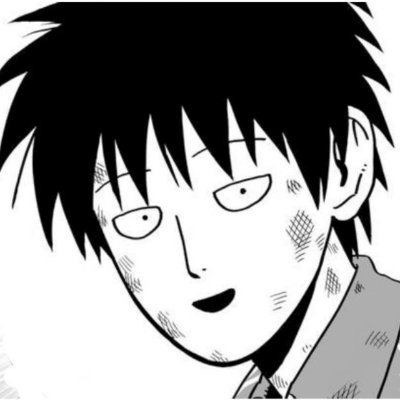

PhD student · Princeton ECE
Jiacheng Guo
I study how agents learn from interaction, from reinforcement learning and LLM post-training to agents that run research loops and improve themselves, with applications in scientific discovery and finance. Advised by Mengdi Wang.

Research interests
Select a topic to filter the work below.
Selected research
Grouped by theme
Self-improving agents & agentic research
GenEnv: Difficulty-Aligned Co-Evolution Between LLM Agents and Environment Simulators
Co-trained agents and environment simulators to generate tasks whose difficulty adapts to the agents' evolving capabilities.
RL & LLM post-training
On the Role of Preference Variance in Preference Optimization
Characterized how preference variance shapes optimization gradients and used this insight to guide preference-data selection.
AI for finance & benchmarks
CryptoBench: A Dynamic Benchmark for Expert-Level Evaluation of LLM Agents in Cryptocurrency
Designed a continuously updated, expert-curated benchmark that disentangles information retrieval from predictive reasoning in cryptocurrency research.
RL theory
Sample-Efficient Learning of POMDPs with Multiple Observations In Hindsight
Introduced multiple observations in hindsight and developed sample-efficient learning algorithms for POMDPs requiring only distinguishable, rather than linearly independent, observation distributions.
Provably Efficient Representation Learning with Tractable Planning in Low-Rank POMDP
Developed algorithms that learn compact representations of observation histories for provably efficient exploration and tractable planning.
Other publications
Collaborations
- ICLR 2026
- ICML 2026
- ICML 2025
- Findings of EMNLP 2025
- ICML 2024
- Preprint
- Preprint
- Preprint
- Preprint
- Preprint
Education
Princeton University
Ph.D., Electrical and Computer Engineering · 2023–present
Fudan University
B.S., Mathematics · 2019–2023